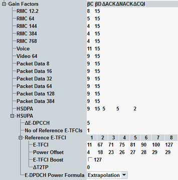

The parameters in this section specify gain factors and power offsets for uplink channels.

Specify the UE gain factors βc (DPCCH) and βd (DPDCH) for the connection types indicated to the left. The numbers behind the connection types indicate data rates in kbps (e.g. RMC with 12.2 kbps).
For calls with constant data rates, the specified gain factors are valid for the entire duration of the connection. For voice connections, the UE can use DTX and switch off the DPDCHs if no data is being transferred.
You can verify to which degree of accuracy the actual gain factors of the uplink channels comply with the gain factors signaled to the UE. Use the "CDP vs. Slot" view of the WCDMA multi-evaluation measurement (option R&S CMW-KM400).
Option R&S CMW-KS401 is required for HSDPA.
Remote command:Power offset parameters ΔACK, ΔNACK and ΔCQI for HS-DPCCH slots carrying ACK, NACK and CQI messages.
Option R&S CMW-KS401 is required.
Remote command:The following parameters control the gain factors for the uplink HSUPA channels E-DPCCH and E-DPDCH.
The UE derives the gain factors from the signaled values. For details, see 3GPP TS 25.213 section 4.2.1.3 and 3GPP TS 25.214 section 5.1.2.5B.
Option R&S CMW-KS401 is required.
Specifies the signaled value ΔE-DPCCH. The value is used by the UE to derive the quantized amplitude ratio Aec. From this ratio, it calculates the E-DPCCH gain factor βec.
Option R&S CMW-KS401 is required.
Remote command:"No of Reference E-TFCIs" specifies how many pairs of reference E-TFCIs and assigned power offset values are signaled to the UE. The pairs are taken from the "Reference E-TFCI" table, using column 1 to n.
Each table column specifies a reference E-TFCI value and a signaled value ΔE-DPDCH (power offset). The signaled ΔE-DPDCH values are used by the UE to derive the quantized amplitude ratio Aed for each reference E-TFCI. From these ratios, it calculates the reference gain factors βed, ref.
Finally, the UE calculates the gain factors for all E-TFCIs and HARQ processes using the reference gain factors and the signaled HARQ power offset (see "H-ARQ Power Offset").
Rel7 provides for E-DPCCH power boosting. "E-TFCI Boost" specifies the E-TFCI threshold beyond which boosting of E-DPCCH is enabled, i.e. the higher E-TFCI are used. "ΔT2TP" specifies traffic to total pilot power offset. The E-DPCCH power is highest for ΔT2TP value of 0 and lowest for value 6.
Option R&S CMW-KS401 is required.
Option R&S CMW-KS403 is required for E-TFCI boost and ΔT2TP.
Remote command:Specifies the UE algorithm for a gain factor computation. The network can only signal a maximum of 8 out of 128 possible E-TFCI values. The UE uses the specified algorithm to determine the power offsets for the remaining E-TFCIs. Formula for extrapolation and interpolation algorithm is specified by 3GPP TS 25.214, section 5.1.2.5B.2.3.
Option R&S CMW-KS413 is required.
Remote command: